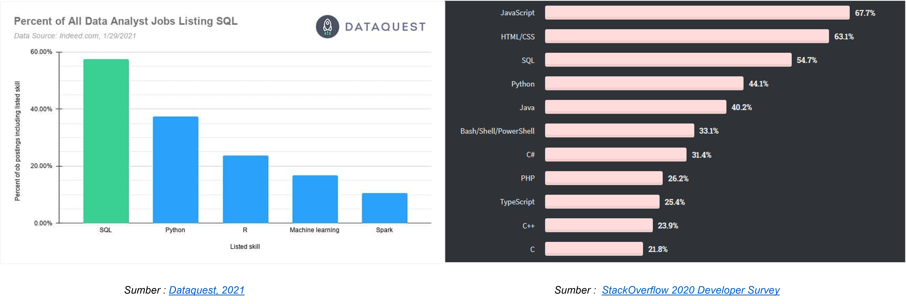
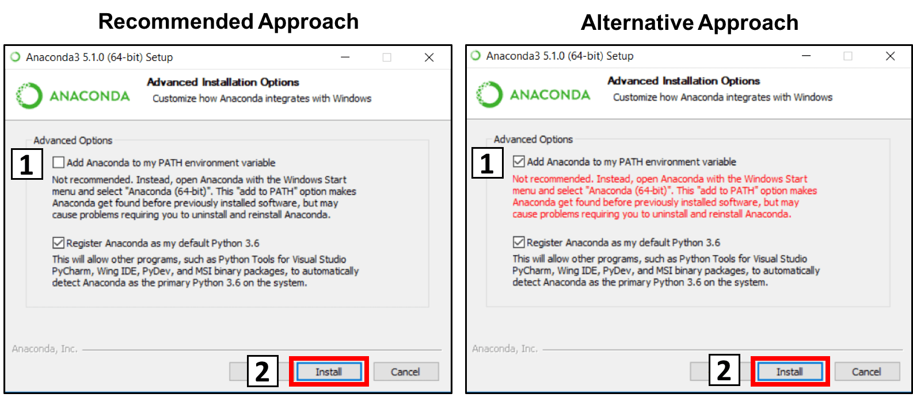
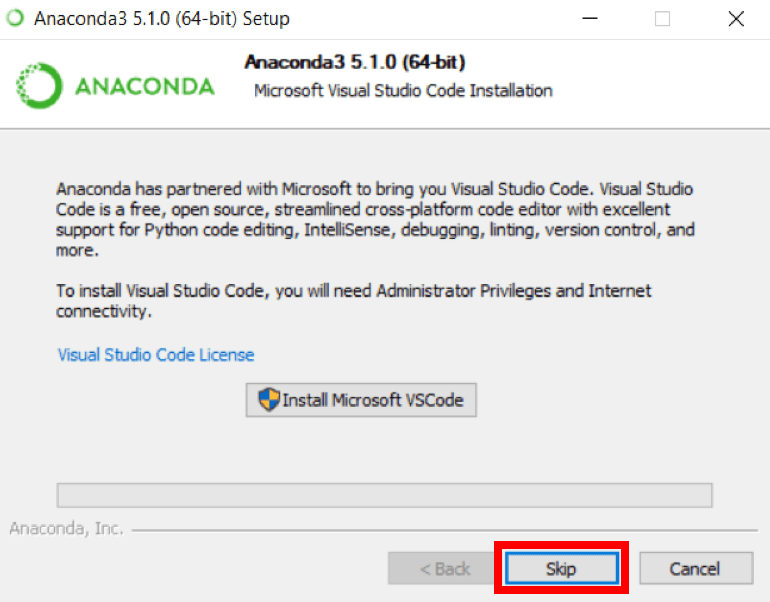
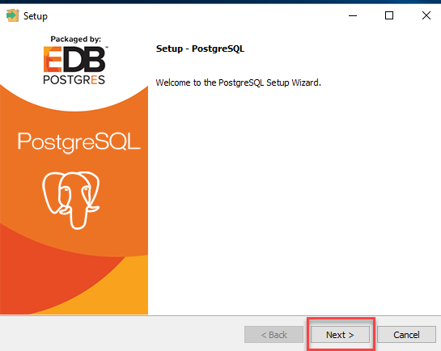
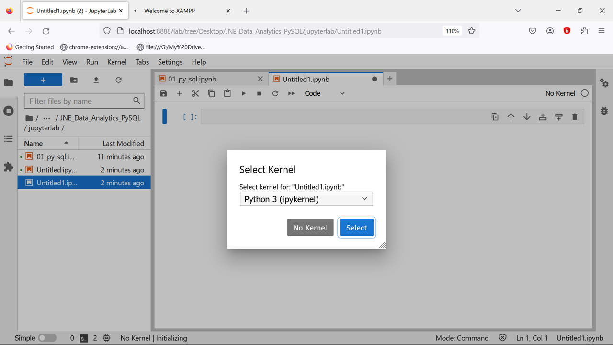
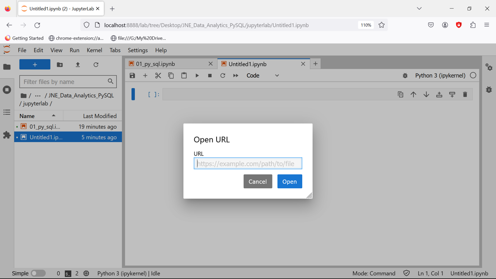

Bab 1 Pendahuluan
Sejak tahun 1970, Structured Query Language (SQL) telah digunakan oleh para programmer untuk membangun dan mengakses Sistem Basis Data (SBD). Banyak sekali perdebatan mengenai cara penyebutan SQL ini, namun pada kenyataannya, kita dapat melafalkannya sebagai “sequel” ataupun “S.Q.L”. Mempelajari bahasa pemrograman umum seperti Python dan R adalah penting, namun tidak memiliki kemampuan SQL akan membuat kita amat sulit untuk mendapatkan pekerjaan dalam bidang pengolahan data.

Hampir semua nama besar di bidang teknologi menggunakan SQL seperti Uber, Netflix, dan Airbnb. Bahkan dalam perusahaan seperti Facebook, Google dan Amazon, yang telah membuat sendiri SBD berkemampuan tinggi, tetap menggunakan SQL untuk melakukan query dan analisis data.
1.1 Apa itu SBD?
Secara umum SBD dapat didefinisikan sebagai berikut:


1.1.2 Manfaat SBD
Manfaat atau kegunaan penerapan SBD cukup banyak dan cakupannya pun luas dalam mendukung keberadaan lembaga atau organisasi maupun perusahaan, diantaranya:

1.1.3 Definisi SQL vs NoSQL
Sebenarnya perbedaan antara SQL dan NoSQL secara mendasar sudah dapat dijelaskan dari akronimnya. SQL basis data relasional yang menggunakan ‘relasi’ (yang biasanya disebut tabel) untuk menyimpan data dan mencocokkan data tersebut dengan memakai karakteristik umum di setiap dataset.

Sedangkan, NoSQL adalah database yang menggunakan format JSON untuk setiap dokumennya sehingga mudah dibaca dan dimengerti. NoSQL banyak diminati karena memiliki performa yang tinggi dan bersifat non-relasional sehingga dapat memakai berbagai model data.
1.1.4 Perbedaan SQL vs NoSQL
Sebenarnya banyak perbedaan yang dimiliki di antara dua database tersebut tapi inilah perbedaan yang paling mencolok antara SQL dan NoSQL:

1.1.5 Top 7 SQL
Tercatat sampai bulan Februari 2020 ada 334 jenis database menurut db-engines.com. Berikut ini saya merangkum daftar 7 database terpopuler yang menggunakan SQL (Relasional):

1.1.6 Top 8 NoSQL
Kebanyakan basis data NoSQL digunakan dalam dunia aplikasi web waktu nyata (real-time web app). Berikut ini adalah ulasan 8 jenis basis data NoSQL yang paling populer digunakan diseluruh dunia:

1.2 Mengapa Python & SQL?
Python adalah sebuah bahasa pemrograman yang digunakan untuk membuat aplikasi, perintah komputer, dan melakukan analisis data. SQL adalah sintaks (bahasa) yang digunakan untuk mengatur dan mengambil informasi dari sistem basis data relasional dan yang juga dapat digunakan untuk membuat basis data sendiri. Jadi, kedua perangkat lunak ini mempunyai peran masing-masing. SQL ditujukan untuk mengakses dan mengambil data dari database. Sedangkan Python digunakan untuk menganalisis dan memanipulasi data dengan menggunakan regresi, time series maupun perhitungan lainnya.
Jika kita ingin bekerja di bidang pengolahan data, kita harus fokus kepada kemampuan yang diinginkan oleh para perusahaan pemberi kerja tersebut. Untuk posisi analis data, SQL termasuk kemampuan yang diutamakan, sekitar 57.4% dari keseluruhan lowongan pekerjaan. Berdasarkan survei yang dilakukan Dataquest dan StackOverflow pada gambar dibawah ini, dapat dilihat bahwa SQL bahkan lebih populer di kalangan data scientist dan data engineer dibandingkan Python dan R.

1.3 MySQL vs PostgreSQL
MySQL adalah sistem manajemen basis data relasional yang memungkinkan Anda untuk menyimpan data sebagai tabel dengan baris dan kolom. Sistem ini populer sehingga digunakan di banyak aplikasi web, situs web dinamis, dan sistem tertanam. PostgreSQL adalah sistem manajemen basis data relasional-objek yang menawarkan lebih banyak fitur daripada MySQL. Sistem ini memberi Anda lebih banyak fleksibilitas dalam tipe data, skalabilitas, konkurensi, dan integritas data.

MySQL dan PostgreSQL, Keduanya menyimpan data di dalam tabel yang terkait satu sama lain melalui nilai kolom umum. Namun keduanya sering dibandingkan karena terdapat beberapa perbedaan. Ingin mengenal lebih dalam? Simak penjelasan di bawah.
1.3.1 Kelebihan
| MySQL | PostgreSQL |
|---|---|
| Integrasi bahasa pemrograman sangat luas; | Support framework website modern seperti Node.js dan Django; Support framework website modern seperti Node.js dan Django; |
| Aplikasi ringan, tidak membutuhkan spesifikasi hardware yang tinggi; | Dirilis dengan lisensi PostgreSQL sendiri; |
| Struktur tabel dengan fleksibilitas tinggi; | Bersifat open source dan gratis; |
| Dibekali banyak administrative tools; | Skala besar, mampu memuat hingga ribuan transaksi data; |
| Bersifat open source dan gratis (versi basic); | Memiliki banyak fitur yang mumpuni; |
| Meski open source, MySQL menjamin keamanan tingkat tinggi; | Memiliki banyak fitur yang mumpuni; |
| Mendukung berbagai variasi Data Type; | Performa sangat baik meski menuntut query yang lebih kompleks; |
| Dapat digunakan banyak pengguna karena mendukung multi user. | Kecepatan analisis (read-write) sangat cepat; Keamanan yang lebih ketat. |
1.3.2 Kekurangan
| MySQL | PostgreSQL |
|---|---|
| Sistem manajemen database kurang cocok untuk aplikasi mobile dan game; | PostgreSQL tidak mendukung semua stack development; |
| Technical support MySQL dinilai kurang baik; | Meski memiliki integrasi dan skalabilitas tinggi, kecepatan PostgreSQL kalah unggul dibandingkan RDBMS lain; |
| Sulit diaplikasikan untuk manajemen database berskala besar. | Sistem kompatibilitas PostgreSQL menuntut pengguna untuk bekerja lebih keras dalam perbaikan dan perawatan. |
1.4 Instalasi Python (Anaconda)
Berikut ini adalah proses langkah demi langkah tentang Cara Menginstal Anaconda di Windows:


1.4.6 Customiza Anaconda
Ini adalah bagian penting dari proses instalasi. approach yang disarankan adalah tidak mencentang kotak untuk menambahkan Anaconda ke path Anda. Ini berarti Anda harus menggunakan Anaconda Navigator atau Anaconda Command Prompt (terletak di Start Menu di bawah “Anaconda”) ketika Anda ingin menggunakan Anaconda (Anda selalu dapat menambahkan Anaconda ke PATH Anda nanti jika Anda tidak mencentang kotak). Jika Anda ingin menggunakan Anaconda pada command prompt Anda (atau git bash, cmder, powershell, dll), gunakan alternative approach dan centang kotaknya.

1.4.7 Setup Complete

###Install Microsoft VSCode
Anda dapat menginstal Microsoft VSCode jika Anda mau, tetapi ini opsional.


1.5 Instalasi MySQL (XAMPP)
1.5.1 Download Aplikasi XAMPP
Silakan klik disini untuk mengunduh applikasi XAMPP, pilih salah satu saja sesuai Operating System pada Komputer anda.

1.5.2 Install Aplikasi
Temukan file XAMPP.exe yang telah anda download, secara default biasanya disimpan di;

Selanjutnya, akan muncul Warning di klik OK

selajutunya klik next

Klik next lagi, karena sudah dipilih secara default oleh XAMPP

1.5.3 Pilih Folder

Secara default akan membuat folder baru C:\xampp, lalu pilih next.
note: jika anda sudah pernah mendownload aplikasi xampp, perlu di hapus terlebih dahulu file xampp yang lama di file C:\xampp


1.6 Instalasi PostgreSQL
Berikut ini adalah proses langkah demi langkah tentang Cara Menginstal PostgreSQL di Windows:


1.6.3 Pilih PostgreSQL version
Anda akan diminta untuk memilih versi PostgreSQL dan sistem operasi yang diinginkan. Pilih versi PostgreSQL terbaru dan OS sesuai dengan environment Anda, klik tombol download.

1.6.4 Open exe file
Setelah Anda mengunduh PostgreSQL, buka exe yang telah diunduh dan Klik berikutnya pada layar install welcome screen.

1.6.5 Pilih folder
Ubah direktori Instalasi jika diperlukan, jika tidak, biarkan default, klik Next.

1.6.6 Select components
Anda dapat memilih komponen yang ingin Anda instal di sistem Anda. Anda dapat menghapus centang pada Stack Builder (disarankan ikuti secara default), klik Next.


1.6.12 Check stack builder prompt
Setelah instalasi selesai, Anda akan melihat prompt Stack Builder. Hapus centang pada opsi tersebut. Kita akan menggunakan Stack Builder dalam tutorial selanjutnya, Klik Finish.


1.7 Praktikal (Hands On)
Untuk memulai bagian ini, pastikan bahwa anda sudah meng-install Anaconda dan XAMPP dikomputer yang akan digunakan. Kemudian, bukalah applikasi Juperterlab yang ada pada layar Anaconda Navigator, seperti diperlihatkan sebagai berikut:

Selanjutnya, akan muncul halaman baru pada browser seperti gambar berikut;

Selanjutnya, klik `File > Open from URL’. Muncul tampilan sebagai berukut:

Terakhir, Copy-Paste dibawah ini pada kolom Open URL. Selanjutnya, ikuti tutorialnya.